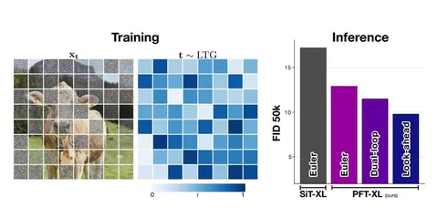

При работе диффузионных моделей все участки изображения расшумляются одинаково, то есть на каждом шаге они находятся на одном таймстепе и получают одинаковое количество вычислений. При этом сложность у разных частей картинки сильно отличается. Так, небо или однородный фон генерируются легко, а текст, мелкие детали и границы между объектами — сложнее.
Сегодня разбираем статью, в которой пробуют решить эту проблему. Авторы предлагают отказаться от общего таймстепа для всей картинки и расшумлять разные её части с разной скоростью. Изображение разбивают на патчи, у каждого из которых может быть свой уровень шума. Простые участки можно быстрее продвинуть вперёд, чтобы они раньше стали более чистыми и через аттеншн помогали расшумлять сложные.
Но тут появляется следующая проблема. Просто независимо семплировать таймстеп для каждого патча на обучении не выходит. Почти в каждом примере появляются сильно расшумленные патчи, на которые модель может опираться при восстановлении остальных. На инференсе, который начинается с чистого шума, такого контекста нет.
Чтобы уменьшить этот эффект, авторы предлагают LTG timestep sampler. Вместо независимого семплирования сначала выбирается максимальный таймстеп для всего изображения, а уже относительно него — таймстеп отдельных патчей. В статье t = 0 соответствует чистому шуму, а t = 1 — данным, поэтому больший таймстеп означает более чистый патч. Таким образом ограничивают количество чистой информации, которую модель видит на конкретном обучающем примере. Причём уже сам переход от одного таймстепа на изображение к patch-level-таймстепам с таким семплированием улучшает генерацию.
Дальше надо понять, какие патчи можно расшумлять быстрее. Для этого к модели добавляют лёгкую голову, которая для каждого патча оценивает неопределённость предсказания. Если модель уверена в простом патче, его можно сильнее продвинуть вперёд. Сложные участки, где неопределённость выше, получают больше уточнений. Вместе с основной моделью голову обучают оценивать, насколько трудно восстановить каждый патч. Авторы показывают, что патчи с более высокой предсказанной неопределённостью в среднем действительно расшумляются с большей ошибкой.
Вместе обучение с patch-level-таймстепами и оценка сложности образуют Patch Forcing. Для его применения модель нужно обучить или дообучить с поддержкой разных таймстепов у патчей и головой сложности. Для такой модели авторы предлагают два адаптивных семплера.
• В dual-loop есть внешний цикл, где уверенные патчи сначала продвигают большим шагом, и внутренний, где сложные патчи догоняют их несколькими маленькими шагами, используя уже обновлённые уверенные патчи как контекст. Когда таймстепы снова совпадают, модель заново оценивает сложность патчей и повторяет цикл.
• В look-ahead уверенные патчи продвигают вперёд, чтобы получить более чистый контекст для сложных. Величина этого опережения зависит от текущего таймстепа: чем дальше продвинулась генерация, тем дальше можно заглянуть вперёд, вплоть до чистого состояния.
Судя по результатам, сам по себе Patch Forcing хоть и не даёт огромный буст, зато хорошо комбинируется с другими методами и показывает, что идея patch-level-расписания расшумления в целом полезное направление для генеративных моделей.
Разбор подготовил
CV Time
